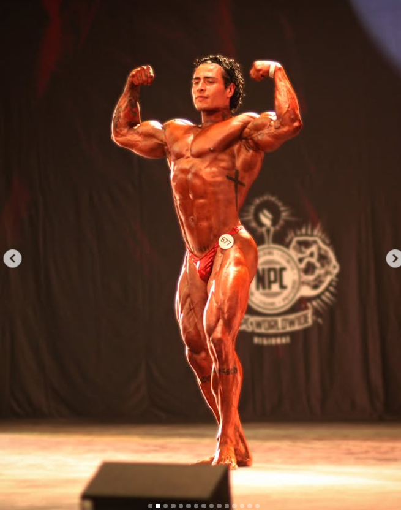
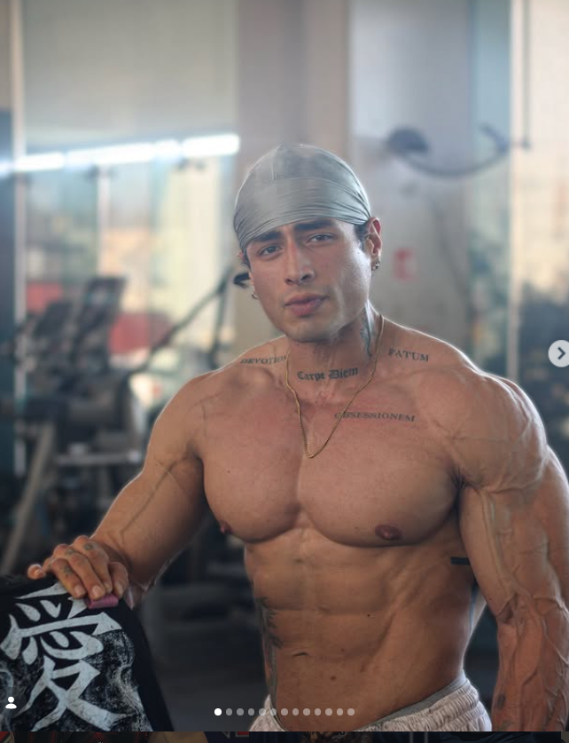
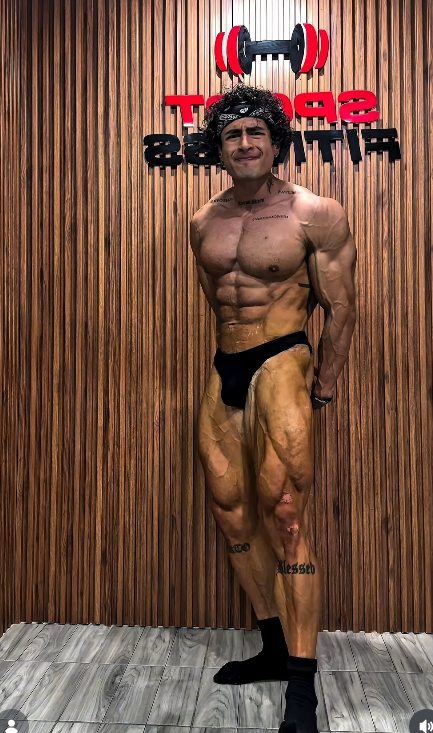

ENTRENAMIENTO
PERSONALIZADO.
Planificación orientada a objetivos, técnica, progresión y contexto individual.

Entrenamiento, nutrición deportiva y preparación competitiva con dirección. Descubre el siguiente paso adecuado para tu experiencia y tu objetivo.
Un proceso serio comienza entendiendo tu punto de partida. El asistente te ayuda a identificar qué conversación conviene tener primero con el equipo.
Planificación orientada a objetivos, técnica, progresión y contexto individual.
Orientación alineada con hábitos, composición corporal y proceso deportivo.
Estructura, posing y seguimiento para quienes buscan presentarse en tarima.
La disciplina pesa más cuando tiene dirección, contexto y un sistema para medir el avance.

Atleta, preparador físico y nutriólogo deportivo. Su trabajo reúne entrenamiento, composición corporal, posing y preparación competitiva.
Objetivo, experiencia, contexto y disponibilidad.
Identificar el servicio o recurso que corresponde.
Aplicar con consistencia, técnica y seguimiento.
Evaluar evidencia, aprender y ajustar.

Entrenamiento, práctica y atención a los detalles que transforman una preparación en presencia.
Ver trayectoria en Instagram ↗Calcula tu punto de partida y practica tu posing. Un registro, acceso a las dos herramientas.
La primera colección transforma la experiencia de Andrés en recursos concretos. El contenido, precio y fecha de apertura se confirmarán con él.
Una ruta para ordenar categoría, presentación, logística y decisiones antes de subir a la tarima.
Postura, transiciones y presencia mediante demostraciones, práctica y autoevaluación.
Un sistema de seguimiento para registrar sesiones, recuperación, tendencias y decisiones.
En lugar de llenar un formulario frío, conversa con el asistente. Te hará preguntas breves para orientar tu solicitud y preparar un resumen para el equipo.